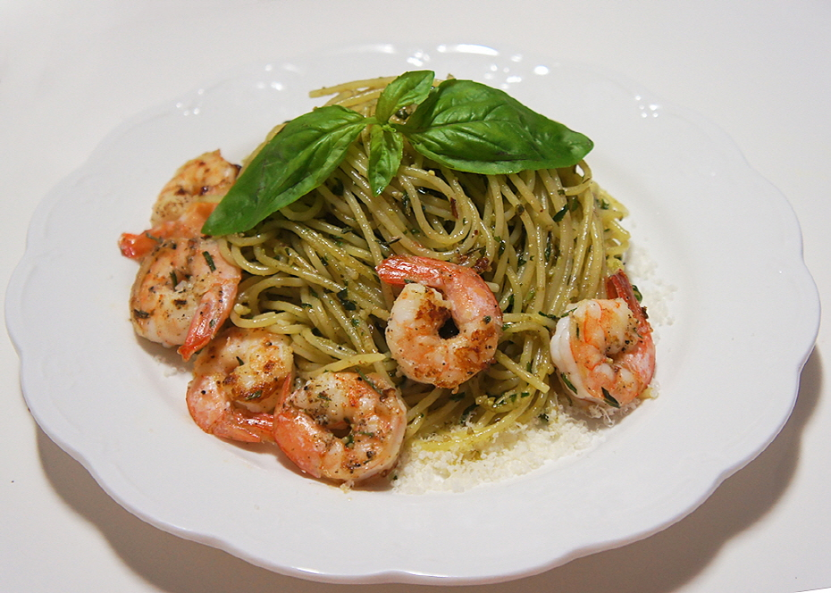
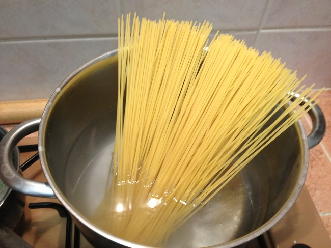

3rd 통새우 바질 파스타
바질은 꿀풀과의 한해살이풀로 전체에 향기와 매운맛이 있어 향신료나 방향제로 쓴며 열대 아시아에 분포하고 재배하기도 한다.
재료
바질 60g
파마산 치즈 30g
마늘
익힌 새우
올리브유 180ml
소금
후추
면
화이트와인 또는 맛술
조리법
Step 1 바질 페스토 만들기
Step 2 양념만들기
Step 3 면 삶기

Step 4 면 볶기 및 완성

믹서기에 바질, 파마산 치즈, 마늘, 올리브유, 소금을 넣고 갈아준다

프라이팬에 올리브오일 1큰술과 화이트와인, 새우를 넣고 볶아준다
냄비에 소금을 소량 넣고 물이 끓이면 면을 넣어준다 (익은것 같다면 물을 모두 버려준다)